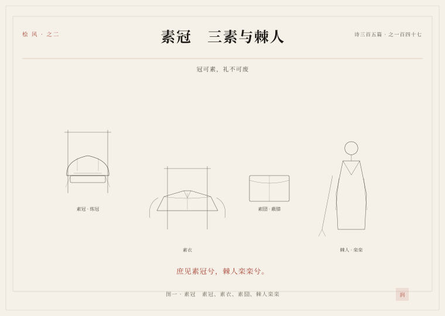
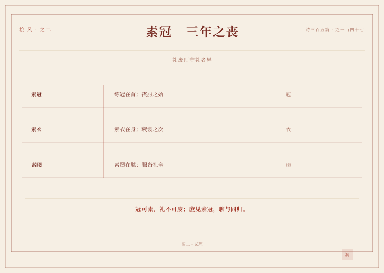

第一百四十七篇 素冠
桧风 · 之二 SJ147
朗读 · 普通话
依经文原文朗读，章次不读出；配古琴底乐，不改速、不加拖腔。全库同一音色（豆包 TTS），非播音员录制。
一 解题
诗三判：
- 谁在说：桧国之人。见时人不行三年之丧，忽见一守素冠、素衣、素𫖒的哀瘠之人，遂以为幸，愿与之同归、如一。
- 说什么事：三章只写三件素服：素冠、素衣、素𫖒；只写一个哀影：棘人栾栾。礼废之世，见一守礼者，竟如见故国。
- 为何编在此：桧风第二篇。前篇刺君废政，此篇伤民废礼；政亡于上，礼亡于下，桧之将亡，不独在兵。
《毛序》：「《素冠》，刺不能三年也。」
朱子《诗集传》：「赋也。庶，幸也。素冠，练冠也。棘人，哀痛之人也。栾栾，瘠貌。慱慱，忧劳也。」二章：「素衣，素裳也。」三章：「素𫖒，素韠也。蕴结，结而不解之意。如一，犹同归也。」
本库的看法：《素冠》是一首把「三年之丧」写成一件素冠的诗。
毛序说「刺不能三年」，朱子说「幸见素冠」，一刺一幸，其实同指：礼已废，守礼者反成异人。
须辨：素冠是练冠，不是吉冠；素衣是丧服，不是白衣雅好；素𫖒是蔽膝，不是佩饰。诗人不是赞美贫穷，是幸见礼在。
断语：冠可素，礼不可废；庶见素冠，聊与同归。
先辨五事：「庶」是幸，不是众多；「素冠」是练冠，不是白帽；「棘人」是哀痛瘠瘦之人，不是荆棘之人；「栾栾」是瘠貌，不是栾木；「素𫖒」是素色蔽膝，不是素裙。
二 经文
第一章
庶见素冠兮，棘人栾栾兮，劳心慱慱兮。
第二章
庶见素衣兮，我心伤悲兮，聊与子同归兮。
第三章
庶见素𫖒兮，我心蕴结兮，聊与子如一兮。
三 韵读
- 一章：冠、栾、慱，元部相叶。三字一韵，声悲而促。
- 二章：衣、悲、归，微部相叶。转微，声细而长。
- 三章：𫖒、结、一，质部相叶。入声收束，声咽而断。
读法：三章由冠而衣而𫖒，服一件一件备；韵由元而微而质，声一节一节收；末章入声，正是「蕴结」之声。
四 字义与名物
- 庶：幸，希望。素冠：练冠，丧服之冠。棘人：哀痛瘠瘦之人。栾栾：瘠貌。慱慱：忧劳貌。
- 素衣：素色丧服。伤悲：心伤而悲。聊：姑且，愿。同归：同守丧制，同归礼。
- 素𫖒：素色蔽膝，丧服之饰。蕴结：郁结不解。如一：同归一致。
五 今译
一章：幸而见到戴素冠的人啊，哀痛的人瘦得栾栾啊，我劳心慱慱不能安啊。
二章：幸而见到穿素衣的人啊，我心伤悲啊，姑且与你同归礼制啊。
三章：幸而见到系素𫖒的人啊，我心郁结不解啊，姑且与你如一啊。
六 章旨
- 一章：素冠而见，先见其冠；冠在头上，礼在人间。棘人栾栾，是礼把人的身子削瘦了，也把人的心立住了。
- 二章：素衣而见，由冠及衣；衣在身，礼在行。「同归」不是同死，是同守三年之丧。
- 三章：素𫖒而见，由衣及蔽膝；服备而礼全。「如一」不是苟同，是同一礼、同一心。
七 诗教
- 礼亡则人异：守丧者本常，废礼之世反成异人；诗之「庶」，是幸，也是痛。
- 丧服不是装饰：素冠、素衣、素𫖒，一件一件都有制度；制度废了，衣服还在，便成戏。
- 同归不是私从：所同者是礼，不是人；读成男女相从，则「三年」二字无着落。
八 分寸与边界
- 不把「素冠」读成白帽清雅：素冠是练冠，丧服之冠；清雅之说，失其礼。
- 不把「棘人」读成荆棘：棘人是以棘为杖、哀痛瘠瘦之人；人不是木。
- 不把「同归」读成殉死：同归是同居丧礼，不是同死；礼可以同守，命不可以同尽。
- 不把此篇读成泛泛伤逝：诗所伤者是「不能三年」，不是一人之死。
九 存疑
- 诗旨：毛序「刺不能三年」，朱子「幸见素冠之人」。本库从毛朱，以礼废为诗骨。
- 「素冠」：毛传「练冠」，朱子从之；一说「素冠」为吉冠之素者。从练冠。
- 「棘人」：一说居丧以棘为杖，一说哀痛如棘。从哀瘠之义。
- 所刺之时：桧国世次不明，诗无明文。存参，不指实。
十 跨典
- 《礼记·三年问》「三年之丧，何也？曰：称情而立文」；此篇所刺，正是「情不称而文不行」。
- 《论语·阳货》「三年之丧，期已久矣」；宰我之问，与此篇之叹，同一礼废之世。
- 《郑风·素冠》？无；《桧风》独存此篇，见小国虽亡，礼声未绝。
十一 双卡与图
六对：
| 庶（幸） |
庶（众多） |
| 素冠（练冠，丧冠） |
素冠（白帽雅饰） |
| 棘人（哀瘠之人） |
棘人（荆棘） |
| 栾栾（瘠貌） |
栾栾（栾木） |
| 同归（同守丧礼） |
同归（同死／私奔） |
| 素𫖒（素色蔽膝） |
素𫖒（素裙） |

图一 · 素冠 素冠、素衣、素𫖒与棘人

图二 · 素冠 三年之丧，礼废人异